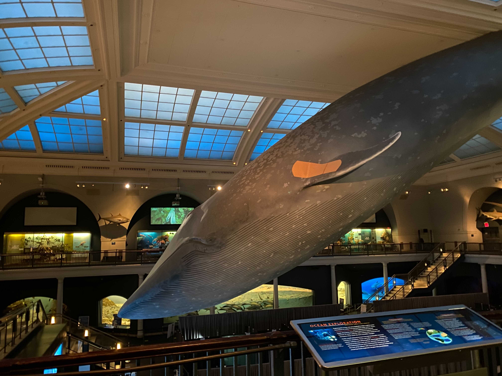

Mission
Hello! We are the Climate Guardians! Our group consists of Lena, Emma, Esandi, Isabella, Ilana, and Maria, under the mentorship of our Helen Fellow Ankitha. We are a group of interns at the American Museum of Natural History passionate about researching climate change and understanding how we can combat it. We set out to explore the North Atlantic Oscillation (NAO) and ultimately further our understanding of its relationship with our changing climate and oceans.
Summary
In October of 2020 we set out on our research journey with the goal of learning about climate change and the North Atlantic Oscillation (NAO). The NAO is the changes between high and low pressure over the North Atlantic Ocean. It influences climate from affecting wing speed, temperature, and sea level pressure. To understand the impact of the NAO on the ocean, we analyzed sea surface temperature data in relation to the NAO climate index to visualize how temperature during strong periods of the NAO has changed since the late 19th century.
Next Steps
If given the opportunity to further this research project, we would love to broaden the scope of our research. This project was centered around the temperatures of New York City, but it would be very interesting to take a look at the impacts that the NAO has on other cities’ temperatures. Perhaps there’s consistencies along the American East Coast? How might those effects differ based on a city’s location? Are results more contingent upon latitude or longitude? We still do not understand if the changes in ocean temperature we observed are related to climate change, the NAO or both influencing each other. One way we could study this is to compare trends in greenhouse gases since the 19th century with ocean temperature in interesting regions/latitude bands in the North Atlantic.